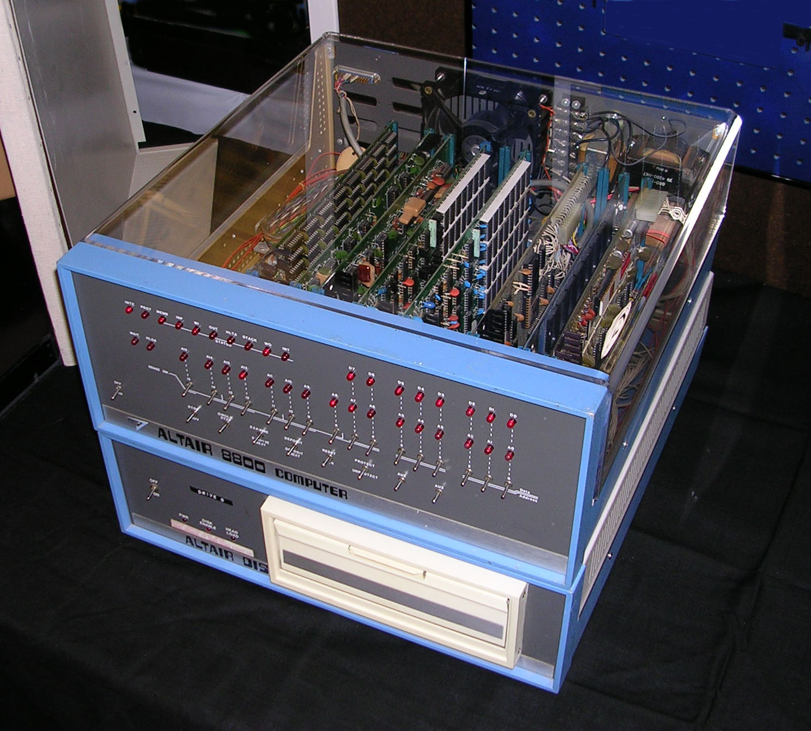

The delicious world of Personal Computers!
The world of computing has been one the fastest evolving industries ever, having progressed from simple text displays on DOS (1981) to creating intricate worlds and videogames that look beyond belief. Let's take a little trip down memory lane and see what the granddaddies of your fancy iPhone looked like.
Datapoint 2200 (1970)
Specs:
CPU: Intel 8008
RAM: 2-16KB
OS: Datapoint OS
Display: 80x12 text only display
Storage: 2x 130KB cassette tape drives
The Datapoint 2200 was a mass-produced programmable terminal, introduced in 1970. Terminals were designed to access other computer systems (like a thin client) but people realised that the Datapoint 2200 could accomplish any task that an ordinary computer could do, so this product is effectively the first personal computer.
Xerox Alto (1973)
Specs:
CPU: 4x 74181 CPUs
RAM: 96-512KB
OS: Alto EXEC
Display: 606x808 pixel display
Storage: 2.5MB Flash Cartridge
The Xerox Alto was a revolutionary step in the right direction for PCs. Not only was it the first computer to offer a GUI, but it also supported a mouse. However, the high cost of both it and its many addons (like a laser printer, and a modem) meant it didn't sell very well.

Altair 8800 (1974)
Specs:
CPU: Intel 8080
RAM: 256 BYTES
OS: Altair BASIC
Display: Optional video output
Storage: Optional tape/floppy drives
The Altair 8800 may seem like a piece of junk compared to the Alto, but it was a huge step in the right direction. Its extremely affordable price (599USD) meant that it was available to the average consumer. the Altair was also very expandable, with cards for everything like printers, floppy drives, you name it. It ran Altair BASIC, more or less an operating system that lets you write and output code to Cassette, floppy disk, or punch tape.

Apple II (1977)
Specs:
CPU: MOS 6502
RAM: 4-64KB
OS: Integer BASIC
Display: Optional; NTSC Composite output
Storage: 130KB 5.25" Floppy drive
The Apple 2 was a massive step forward in terms of future-proofing, expansion, and replacement. Every single one of it's chips are socketed, which allowed for easy replacement. However, it's designed around an odd hack of the MOS 6502, which allows access to the first 2048 bytes of memory every cycle, rather than taking 8 cycles. This made it hard to program around, but nevertheless, its easygoing price of 1,500USD made it the first consumer-accessible GUI-based PC.

IBM PC 5150 (1981)
Specs:
CPU: Intel 8088
RAM: 16-256KB
OS: PC-DOS
Display: VGA Output
Storage: Single 320K Floppy disk drive
The IBM PC was the single most innovative PC product ever made. It marked the debut of PC-DOS, and the beginning of the standard x86 architecture. Because of it's enormous popularity, many clones at cheaper prices soon hit the market, and laid the groundwork for the modern PC. Without the IBM PC, we might not have smartphones, laptops, or even graphics cards, confined to an extremely fragmented market of proprietary architectures and incompatible software.
About HTML and this quiz page
I have created this quiz web page using web scripting technologies. Here is some information about these languages.
This text is from the Wikipedia page on HTML.
Some Key things I have learnt about HTML:
Hypertext Markup Language (HTML) is the standard markup language for creating web pages and web applications.
With Cascading Style Sheets (CSS) and JavaScript, it forms a triad of cornerstone technologies for the World Wide Web.
Most websites will contain these file types
- .html (the bones of the content)
- .css (the styles)
- .js (any program or animation)
- .jpg or .png (image files)
HTML can embed programs written in a scripting language such as JavaScript, which affects the behavior and content
of web pages. Inclusion of CSS defines the look and layout of content. The World Wide Web Consortium (W3C), maintainer of both
the HTML and the CSS standards, has encouraged the use of CSS over explicit presentational HTML since 1997.
HTML elements are the building blocks of HTML pages. With HTML constructs, images and other objects such as interactive forms
may be embedded into the rendered page. HTML provides a means to create structured documents by denoting structural semantics
for text such as headings, paragraphs, lists, links, quotes and other items.
HTML markup consists of several key components. The text in the BODY is the visible page content. HTML tags most commonly come
in pairs like H1, although some represent empty elements and so are unpaired, for example IMAGE. The first tag in such a pair is
the start tag, and the second is the end tag (they are also called opening tags and closing tags).
Another important component is the HTML document type declaration at the very beginning, which triggers standards mode rendering.
I am proud of myself for learning about HTML, CSS, and JavaScript. It’s great to understand a bit about how the internet works because
I use it everyday. I can now create and edit websites on my own.